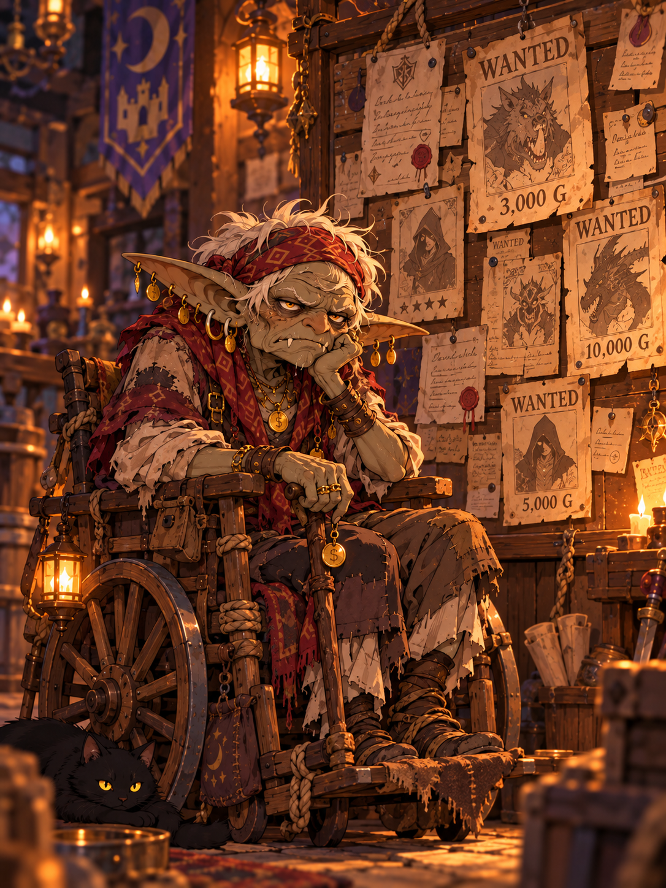

SERVIZIO MISSIONI
MONETE D'ORO
0
RISERVA DEL SERVIZIO
Autonomia
--:--:--
Riserva equivalente
-- oro
ZONE DEL PALAZZO ETERNO
35%

MISSIONI — INGRESSO
Non devi accettarle. Completa il requisito, torna qui e ritira il premio.
MISSIONI UNICHE
Caricamento missioni...
MISSIONI GIORNALIERE
Si sbloccano consegnando per la prima volta la Testa del Boss Goblin. Si azzerano ogni giorno a mezzanotte (ora italiana).
Caricamento missioni giornaliere...